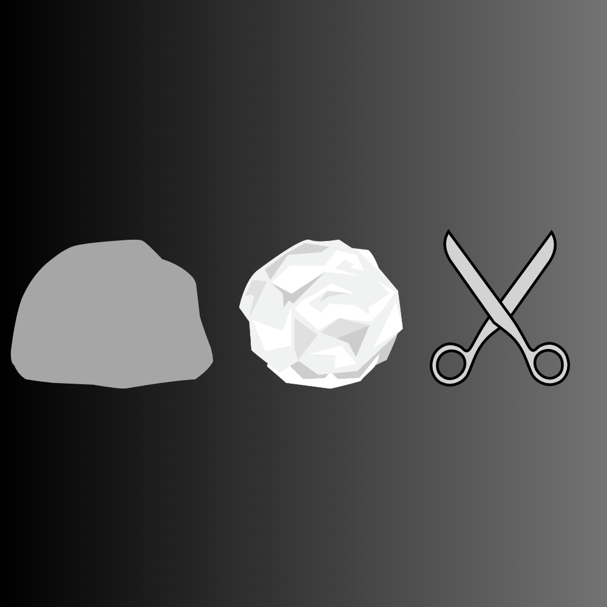

Computer Science - Personal Portfolio
I am currently enrolled in Computer Science at The University of Ontario Institute of Technology. I hold a passion for coding & programming, with proficient knowledge in Java, C++, JavaScript, HTML, and Python. I seek challenges to enhance my Software Development and Data Analysis skills, my goal is to contribute my expertise to an organization that can see a fit for me on their team. Currently, I'm actively seeking opportunities to further develop my skills and gain practical experience in the industry.
Skills
Education
Experience
Using a combination of HTML, JavaScript, CSS and Glassfish, I developed a Spam Detector that uses a dataset of emails and recognizes whether or not the new E-Mails are spam. Computing the backend part of the project was completed using RESTful API, where different HTTP endpoints are used to perform specific tasks and retrieve information. The code utilizes endpoints to retrieve spam results, with accuracy, and precision and uses the JSON format to represent and exchange data. This also calculates the probabilities based on the frequency of each word.
Using a combination of JavaScript, HTML, and CSS with WebSockets, I developed a Live Web Chat Server. The server holds multiple real-time chat rooms amongst multiple people, where messages can only be sent to those on the same room code. Utilizing Object Oriented Programming, I was able to store data in a class and provided methods to manipulate and interact with that data.

Simple rock paper scissors game that was coded using HTML, JavaScript and CSS. The website follows a simple design with respective buttons that the user can click to decide on Rock, Paper or Scissors. With the use of JavaScript and HTML, I defined specific functions along with event listeners that would select the necessary elements from the HTML document. The user plays against a computer, where the choice of the computer is chosen at random.
Copyright © Ryan Liu from The University of Ontario Institute of Technology